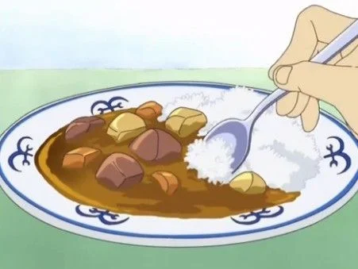

Marine Captain's Curry
With the guidence of Sanji, Tajio(a marine apprentice) is seen making Sanji's delicious curry.
Both sharing the belief of the all blue, Sanji guides Tajio on how to make the dish.
A curry is a dish with a sauce seasoned with spices, mainly associated with South Asian cuisine.
Sanji's food will make anyone across the grandline beg for more!
Ingredients

- 3 potatoes
- White Onions
- 3 Sweet apples
- 4 Tomatoes
- 1/2 tbsp Freshly grated ginger
- 4 Cloves garlic
- Beef
- Beef Stock
- Flour
- Curry powder
- Turmeric
- Garam Masala
- Butter
- Rice
Steps
Credit
- Marinate your beef in the ginger, garlic, turmeric and yogurt
(Marinating overnight will allow the meat to become more tender and flavorful when you cook it).
- Slice carrots and tomatoes, cube potatoes and grate apples.
- Chop onions and then sweat them on a high heat until they are soft.
Reduce heat and brown, once browned set aside.
- Put butter in a pot and heat until its melted. Add the flour and cook it a little on a low heat.
Add your curry powder and garam masala then keep stirring until it becomes very fragrant.
- Slowly add stock while stirring.
- Add your browned onions, carrot, potato, tomato and grated apple.
- Bring mixture to a boil and then turn down to simmer. Place a lid on top (Stir often so it doesnt burn).
- Cook your rice before your curry is done so you can plate it all while its hot.
- After about 1 1/2 hours to 2 hours it should be done? Idk what your stove is like.
- Enjoy a taste of the East Blue!